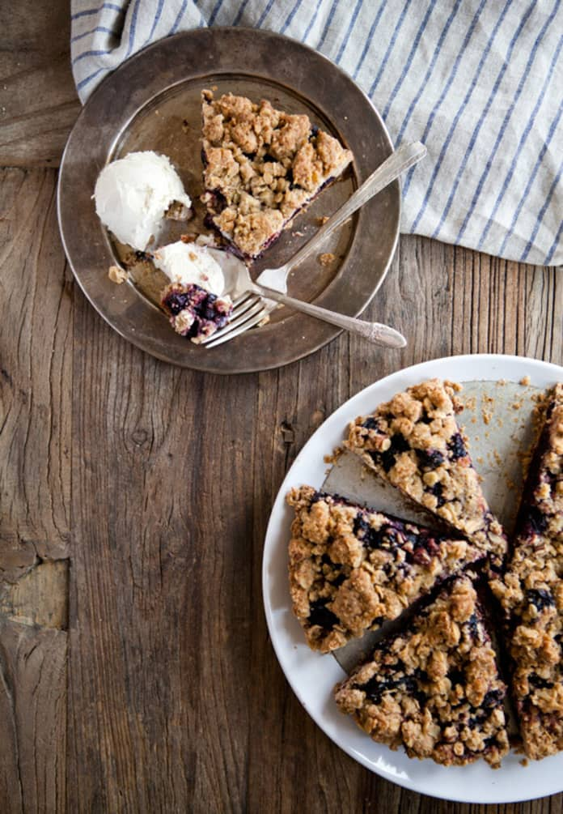

Whole Wheat Plum Crumble
Description
I've made this half a dozen times now, mostly with plums, but also with blackberries and strawberries, and it is delicious. Not too sweet, especially with plums, as the fruit is so tart.
Can substitute coconut oil, vegan butter, etc for cow-milk butter.
Ingredients
For the crust:
- 1 cup flour
- 1/2 cup whole wheat flour
- 1/2 teaspoon salt
- 1/3 cup sugar
- 1 tablespoon vanilla
- 1/2 cup (1 stick) unsalted butter, melted
- Extra butter for greasing the pan
For the crumble topping:
- 3/4 cup oats
- 1/2 cup all purpose flour
- 1/2 cup whole wheat flour
- 1/4 cup brown sugar
- 1/4 cup sugar
- 1/2 teaspoon cinnamon
- 3/4 teaspoon salt
- 1/2 cup (1 stick) unsalted butter, melted
For the filling:
- 1 pound plums, pitted and sliced into quarters (about 2 cups sliced)
- 1 tablespoon sugar
Steps
- Generously grease a 9" pie pan with butter. In a large bowl, mix the dry ingredients for the crust. In a small bowl, whisk the 1/2 cup butter with vanilla. Stir the butter mixture into the dry with your hands until a semi-uniform dough is formed. Press into the prepared pie pan and freeze for 15-30 minutes while you assemble the rest of the pie.
- Preheat the oven to 300°F. To make the crumble topping, use a large bowl to combine the oats, flours, brown sugar, cinnamon and salt. Stir in the melted butter and form clumps, about 1" big or smaller. The topping will barely form together and that's okay!
- Blind-bake the crust without filling for 45 minutes. No need to use pie weights or anything else on the crust while baking. Remove crust and increase the oven temperature to 350°F.
- Toss the plums in the sugar and arrange over the crust. Lightly press the crumble topping into the plums, leaving little openings for the plums to peek out. Bake for about 45 minutes to 1 hour, until topping is golden brown. Cool on a rack and serve with plenty of ice cream.